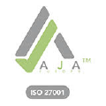

みなさまとともに、
グッドリサイクル社会を。
- 私ども、しんえこが創業以来めざすリサイクル事業は、私たちが暮らす地球と社会に感謝し、もったいない精神のもとで地域のみなさまが安心して気軽に参加していただける資源回収事業です。
本事業は広範な地域の皆さまのご理解とご協力をいただき、おかげさまで不要になった沢山の資源物を気軽にお持ち込みいただけるようになり、多くの資源物が無駄なくリサイクルできるようになりました。
あらためて、地域の皆さまと関係者の皆さまのご理解とご協力に感謝申し上げます。
今日、人間活動が原因とみられれる地球温暖化による豪雨災害や、過剰な森林伐採による干ばつ、あるいは経済格差の広がりなど様々な問題が絡み合って、このままでは人類そのものの存続も危うくなるとの国際的な共通認識のもと、2015年9月の国連サミットで2016年から2030年までの「持続可能な開発目標」を定め、SDGs(Sustainable Development Goals)が採択されました。 - 一方、しんえこでは、私どもの親会社エンビプロ・ホールディングスの「持続可能社会実現の一翼を担う」というミッションステイトメントの下、リサイクル技術とサービス力に磨きをかけ、また障害を持ちながらも積極的に社会参加されたい方々と共に、安心して働くことのできる環境をさらに整えていきたいと思います。
私たちしんえこの変わらぬ目標は、地域の皆さまと連携してグッドリサイクル社会のプラットホームとして地域の人々が集い、そして雇用が生まれ、社員のやりがいのある会社の実現です。
「この地域にしんえこがあってよかった。」「しんえこに入社してよかった。」と言っていただける会社をめざして精進を重ねてまいります。
今後とも一層のご支援、ご指導を賜りますようよろしくお願いいたします。
株式会社しんえこ
代表取締役 小松 茂人
会社概要
| 商号 | 株式会社しんえこ SYN ECO inc. |
|---|---|
| 所在地 | 〒390-0852 長野県松本市大字島立2346番地 |
| 電話・FAX | TEL 0263-47-3211 FAX 0263-47-3213 |
| 代表者 | 代表取締役社長 小松茂人 |
| 資本金 | １億円 |
| 設立 | 2002年2月 （2011年4月 エンビプロ・グループへ） |
| 従業員数 | 59名（2022年6月現在） |
| 事業内容 |
|
| 取引銀行 |
|
| 株主 | 株式会社エンビプロ・ホールディングス |
グループ会社
-
株式会社エンビプロ・ホールディングス
グループ企業（リサイクル事業会社）の経営管理を行っています。
（連結子会社12社（孫会社含む）、持分法適用関連会社2社）東京証券取引所プライム市場上場企業
一般社団法人 日本経済団体連合会 会員 -
株式会社エコネコル
静岡県東部地区を中心に、60年余にわたりリサイクル事業を営んでいます。
エンビプロ・ホールディングスグループの中核会社として、
現在そして将来を見据えたリサイクル事業に取り組んでいます。 -
株式会社NEWSCON
2020年7月1日より株式会社NEWSCONは株式会社エコネコルより
グローバル資源循環事業を承継し、事業を開始いたします。
-
株式会社3WM
世界中のドライバーに高品質な日本の中古自動車・部品等を供給して います。
ＵＡＥ・チリに販売拠点を置き、商品物流ネットワークの拡大しております。
平成24年４月に３WMウガンダを設立しました。 -
株式会社サイテラス
サイテラスは“国境なき総合物流”を掲げ、国や条件に左右される事なく
ワンストップで世界中に荷物をお届けし、循環型社会の一翼を担い
地域社会に貢献する企業を目指します。 -
株式会社クロダリサイクル
創業90周年を迎えました。函館地区においてリサイクル事業を営んでおり、
地域に密着した多様な品目のリサイクル活動に取り組んでおります。 -
株式会社アストコ
障害福祉サービス事業。資源リサイクル事業との組合せによる障害者支援、
雇用創出を目指しております。 -
株式会社東洋ゴムチップ
廃ゴムに関するリサイクル及びゴムチップ等(弾性舗装材)のゴム製品の
製造・販売を行っており、平成27年12月にエンビプログループに加わりました。 -
株式会社VOLTA
リチウムイオン2次電池をリサイクルし有用金属を回収することを目的として
平成30年1月に設立いたしました。 -
株式会社ブライトイノベーション
環境イノベーション及び社会イノベーションを軸としたコンサルティング事業を
展開する事を目的として平成28年4月に設立いたしました。 -
株式会社アビヅ
株式会社ユー・エス・エスとの合弁事業で、中京地区において、
廃自動車をはじめとするさまざまな廃棄物の破砕・選別処理を行い、
資源に還元する独自のシステムを活用し、リサイクル活動に取り組んでおります。
しんえこの企業理念
-
創業企業
「つねに社会にとって必要な事業を創造しつづける」
日々創業・・・初心を大切に日々創業精神で仕事をする
歴代創業・・・代々初代の志を持って新事業を創造する
全員創業・・・全社員が自分に合う第一人者の道を拓く -
循環企業
「助け合い、活かし合い、分かち合う喜びの環を回しつづける」
快労・・・助け合い、補い合って気持ちよく働く
活財・・・あらゆるもののいのちを活かして使い回す
還元・・・利益や喜びを共に生きる人たちと分かち合う -
求道企業
「永遠につづく企業の道、人の道を追求しつづける」
選難の道・・・安易な道を選ばず求められる道を歩む
独自の道・・・特質を生かし人のやらないことをやる
感謝の道・・・生かされていることに感謝し慢心をしない
しんえこの社名
しんえこ ＝ SYN ECO
-
SYN =
グループのSynergy（相乗）と信州の「信」
-
ECO =
Economy（経済）とEcology（環境）の両立
許認可一覧
| 許認可の名称 | 官公庁等 | 許可等の番号 |
|---|---|---|
| 産業廃棄物処理施設設置許可証 | 長野県 | 許可番号070134 |
| 産業廃棄物処分業許可証 | 松本市 | 第13620109834 |
| 産業廃棄物収集運搬業許可証 | 長野県 | 第2004109834号 |
| 群馬県 | 第01000109834号 | |
| 静岡県 | 第02201109834号 | |
| いわき市 | 第09400109834号 | |
| 岐阜県 | 第02100109834号 | |
| 山梨県 | 第01900109834号 | |
| 愛知県 | 第02300109834号 | |
| 富山県 | 第01606109834号 | |
| 新潟県 | 第0150919834号 | |
| 秋田県 | 第00501109834号 | |
| 一般廃棄物収集運搬限定許可・ 一般廃棄物処分業許可 |
松本市 | 松環業指令第第181号 |
| 一般廃棄物処分業許可 | 安曇野市 | 安曇野市指令2廃第655号 |
| 一般廃棄物処理業許可証 （収集運搬許可） |
安曇野市 | 安曇野市指令2廃第463号 |
| 小谷村 | 小谷村指令4住9-2号 | |
| 白馬村 | 4白住発第73-12号 | |
| 山形村 | 2山役往許可第8号 | |
| 筑北村 | 3筑住福第521号 | |
| 塩尻市 | 塩尻市指令4生第1号の19 | |
| 生坂村 | 許可番号017号 | |
| 池田町 | 3住環第160号 | |
| 引取業登録通知書 | 長野県 | 第20201001681号 |
| 破砕業許可証 | 長野県 | 第20206001681号 |
| 古物商許可証 | 長野県公安委員会 | 第481320600061号 |
| 金属くず商許可証 | 長野県公安委員会 | 第481322280004号 |
| 廃棄物再生事業者登録証明書 | 長野県 | 再第09013号 |
| 第一種フロン回収業者登録変更通知書 | 長野県 | 登録番号2010382 |
| 計量証明事業登録証 | 長野県 | 一般 第121号 |
| 解体工事業登録 | 長野県 | 3 建政 第7-36号 |
| ISO27001（ISMS）登録証 | AJA Registrars Ltd. | 登録番号 AJA12/16424 |
ISO取得情報
ISO27001（ISMS）認証取得
| 情報セキュリティ基本方針 | |
|---|---|
| 登録活動範囲 |